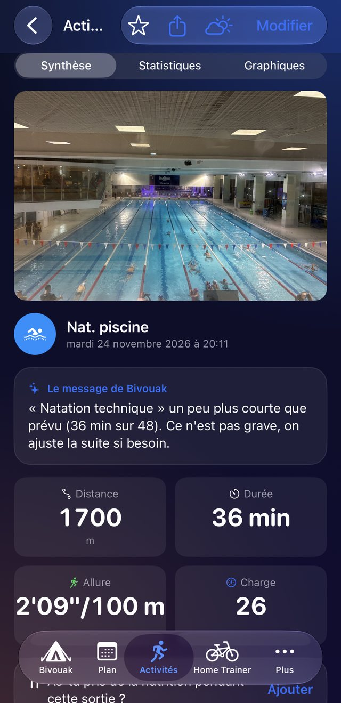
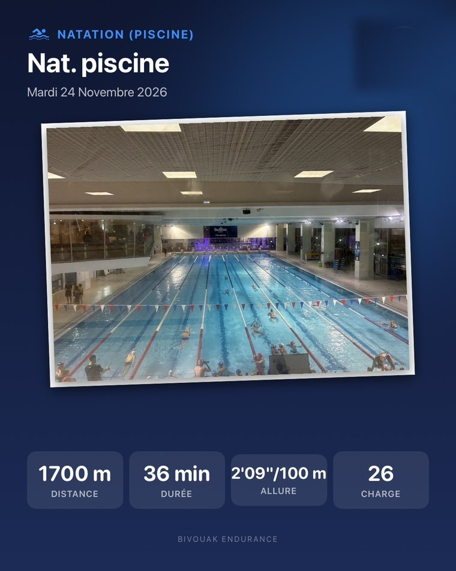
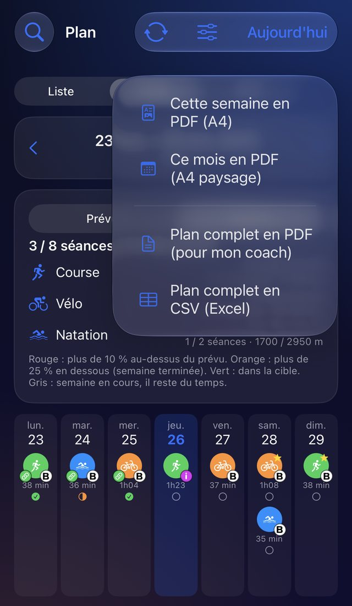
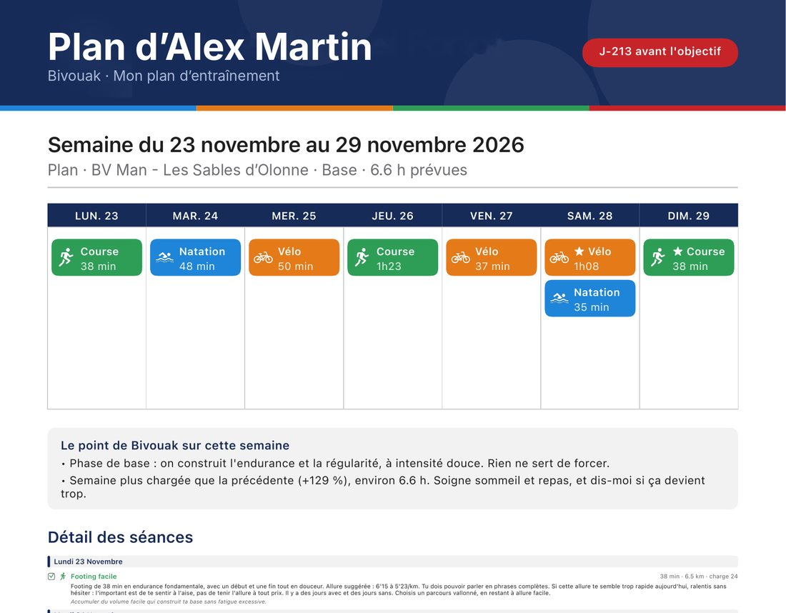
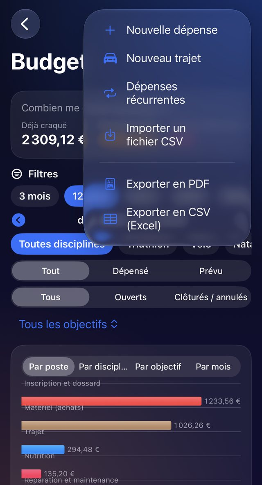
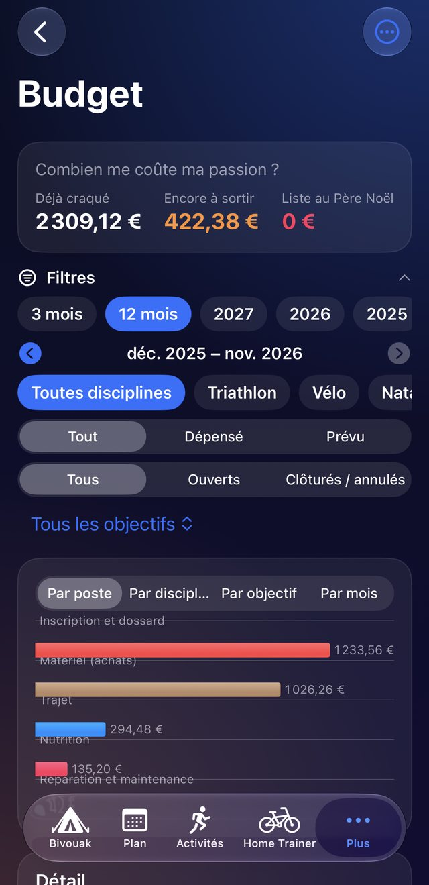
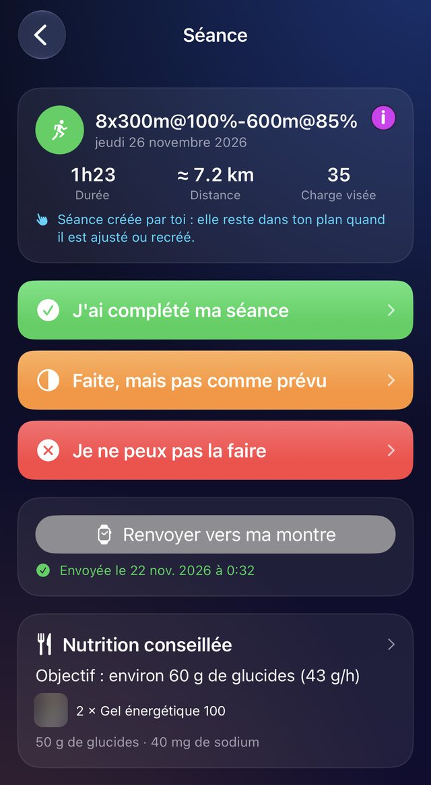
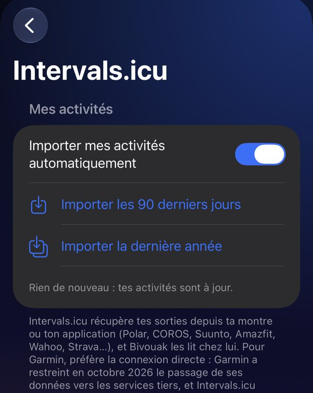
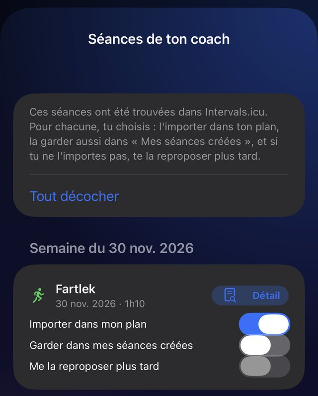
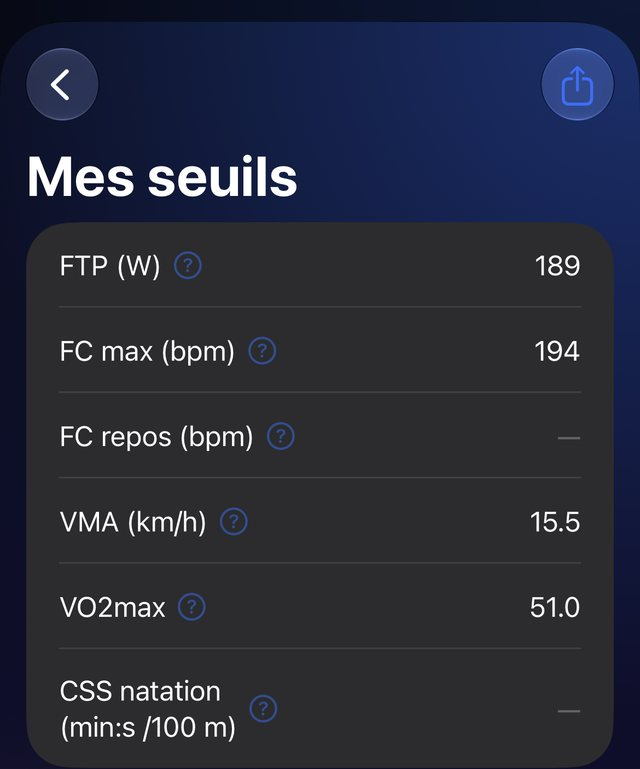

Image souvenir
Une image carrée verticale : nom de la sortie, date, chiffres clés, tes photos et la carte du parcours si l’activité a une trace GPS. Ta photo et le logo de ton club s’affichent en haut à droite.
Image
Ce que tu saisis dans Bivouak sert à d’autres que toi : ton coach, ton club, tes proches, ton assureur, ton frigo. Tout sort en image, en PDF ou en tableur, quand tu le décides.
Une belle sortie, un test réussi, une course terminée : Bivouak fabrique de quoi l’envoyer. Rien n’est partagé sans que tu choisisses toi-même où l’envoyer.
Une image carrée verticale : nom de la sortie, date, chiffres clés, tes photos et la carte du parcours si l’activité a une trace GPS. Ta photo et le logo de ton club s’affichent en haut à droite.
Image
Sur la page résultat d’une course terminée : un diplôme en A4 paysage avec ta photo, ton nom, la course, la date, ton temps et ton classement s’ils sont renseignés. Marqué « personnel, non officiel ».
FTP, VMA, nage : le résultat lu dans les tours, ta valeur enregistrée, les tests précédents, le tableau des tours et tes notes.
Le bilan d’un stage (séances, durée, distance, dénivelé, détail par discipline) en image à partager, et son programme jour par jour avec le réalisé.
Image · PDF


Pour imprimer, afficher sur le frigo, envoyer à ton coach, ton club ou ton assureur. Chaque PDF porte ton nom et ta photo en en-tête.
Une page A4 : la semaine en un coup d’œil, le point de Bivouak et le détail de chaque séance (durée, distance, charge, consigne, case à cocher).
Un calendrier A4 paysage pensé pour le frigo ou la porte : chaque séance est une tuile colorée, avec l’icône du sport, lisible de loin.
Le plan semaine par semaine, avec phase, durée, distance et état de chaque séance : « pour mon coach ».
FTP, FC max, FC de repos, VMA, nage de référence, VO2 max, avec leur origine (saisi, testé, estimé), leur date, et les zones de puissance.
Tout ce que tu as renseigné pour la course sur une page lisible, et un journal A4 à imprimer : pratique quand le téléphone est interdit sur la course.
Matériel en service et retiré, dates et prix d’achat, garanties, numéros de série et Bicycode : utile pour un inventaire ou ton assurance (ce n’est pas une preuve d’achat).
Dépensé, prévu, dépensé par catégorie et détail, selon la période et les filtres choisis.
Programme et bilan : résumé, heures par discipline, tableau jour par jour.


Tes données ne sont pas enfermées : elles sortent dans un format que n’importe quel tableur ouvre, et certaines peuvent y être retravaillées puis réimportées.
Une ligne par séance : date, phase, sport, type, durée, distance, charge prévue, séance clé, état, description. Aucune donnée de santé n’est incluse.
CSV
Exporte ton plan, un modèle vide ou le guide des champs, change durées, distances et notes, puis réimporte. Avant tout changement, Bivouak affiche ce qu’il a compris et les lignes refusées avec la raison.
CSV
L’export a les mêmes colonnes que l’import : tu peux le retravailler puis le réimporter. Un fichier modèle est proposé, et les lignes déjà présentes sont ignorées.
CSV
Ton garage entier, ou un seul espace, dans un tableur à retravailler.
CSV


Bivouak fonctionne seul, mais parle avec le reste de ton matériel, sans rien envoyer sans ton geste.
Tes séances partent dans l’app Entraînement de la montre : les 14 prochains jours d’un coup, ou une séance à la fois, avec leurs étapes et la puissance cible du vélo. Aucune app à installer sur la montre.
Direct
Via Intervals.icu une fois connecté : les séances prévues arrivent sur ta montre.
Intervals.icu
Exporte une séance détaillée en .zwo (Zwift et logiciels compatibles) ou en .fit (montre ou compteur Garmin), avec les cibles calculées d’après tes seuils.
.zwo · .fit
Fichiers .fit, .gpx, .tcx de toutes les marques, Garmin Connect, ou Intervals.icu qui récupère Polar, COROS, Suunto, Wahoo, Strava… Une sortie déjà présente n’est jamais comptée deux fois.
Import
Un GPX reçu par Mail, Fichiers ou Komoot se range en dossier, avec sa carte, sa distance et son dénivelé, et peut repartir vers une autre app.
GPX


Bivouak ne remplace ni ton coach ni ses outils. Il s’y branche : ses séances arrivent chez toi, et tes données lui arrivent sous des formats qu’il lit déjà.
Si ton plan vient d’un coach et qu’Intervals.icu est relié, Bivouak regarde au plus une fois par jour les séances déposées, jusqu’à 4 mois à l’avance. Tu coches, tu importes.
Coach → toi
Aperçu complet avant de choisir : importer dans ton plan, garder dans tes séances créées, ou te la reproposer plus tard. Si le coach modifie une séance déjà importée, elle est reproposée avec la mention « modifiée ».
Coach → toi
Quand elle existe, Bivouak lit la cible des étapes de travail (allure en pourcentage de ta VMA, ou puissance) et la compare à ce que tu as fait, sans l’échauffement ni les récupérations.
Coach → toi
Séance du coach et séance de Bivouak le même jour, dans le même sport : celle de Bivouak n’est pas comptée comme ratée, elle est marquée « remplacée ».
Coach → toi
Le plan complet en PDF, semaine par semaine, ou en CSV pour qu’il le reprenne dans son tableur.
Toi → coach
Le PDF des seuils et zones, avec l’origine et la date de chaque valeur. À confirmer par un test.
Toi → coach
Le PDF des résultats d’un test (FTP, VMA, nage). Pour un test fait avec ton coach, marque l’activité « C’est un test de performance » : à lui et à toi d’en tirer la conclusion.
Toi → coach
Si ton coach suit déjà tes sorties dans Intervals.icu ou Garmin Connect, rien ne change : Bivouak les lit, il ne te demande pas de les republier.
Toi → coach


Bivouak n’est pas une plateforme de coaching en ligne. Il n’y a ni messagerie ni compte partagé avec ton coach : l’échange passe par Intervals.icu et par les documents que tu envoies toi-même, quand tu le décides.